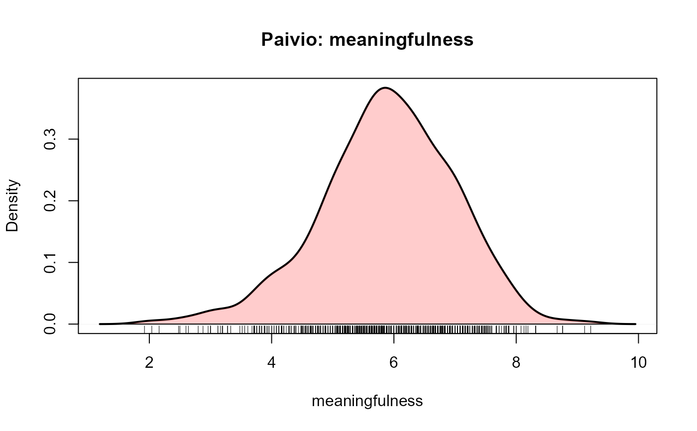

Paivio, Yuille & Madigan Word Pool
Paivio.RdThe Paivio, Yuille & Madigan (1968) word pool contains 925 nouns, together with average ratings of these words on imagery, concreteness and meaningfulness, along with other variables.
Usage
data(Paivio)Format
A data frame with 925 observations on the following 9 variables.
itmnoitem number
wordthe word
imageryimagery rating
concretenessconcreteness rating
meaningfulnessmeaningfulness rating
frequencyword frequency, from the Kucera-Francis norms
sylnumber of syllables
lettersnumber of letters
freerecallFree recall proportion, added from Christian et al (1978)
Source
Paivio, A., Yuille, J.C. & Madigan S. Concreteness, imagery and meaningfulness for 925 nouns. Journal of Experimental Psychology, Monograph Supplement, 1968, 76, No.1, pt.2.
Christian, J., Bickley, W., Tarka, M., & Clayton, K. (1978). Measures of free recall of 900 English nouns: Correlations with imagery, concreteness, meaningfulness, and frequency. Memory & Cognition, 6, 379-390.
References
Kucera and Francis, W.N. (1967). Computational Analysis of Present-Day American English. Providence: Brown University Press.
Rubin, D. C. & Friendly, M. (1986). Predicting which words get recalled: Measures of free recall, availability, goodness, emotionality, and pronunciability for 925 nouns. Memory and Cognition, 14, 79-94.
Examples
data(Paivio)
summary(Paivio)
#> itmno word imagery concreteness
#> Min. : 1 Length:925 Min. :1.630 Min. :1.180
#> 1st Qu.:232 Class :character 1st Qu.:3.800 1st Qu.:3.110
#> Median :463 Mode :character Median :5.170 Median :5.720
#> Mean :463 Mean :4.968 Mean :4.956
#> 3rd Qu.:694 3rd Qu.:6.270 3rd Qu.:6.690
#> Max. :925 Max. :6.900 Max. :7.700
#>
#> meaningfulness frequency syl letters
#> Min. :1.920 Min. : 0.00 Min. :1.000 Min. : 3.00
#> 1st Qu.:5.220 1st Qu.: 4.00 1st Qu.:2.000 1st Qu.: 5.00
#> Median :5.920 Median : 21.00 Median :2.000 Median : 7.00
#> Mean :5.892 Mean : 31.89 Mean :2.278 Mean : 6.91
#> 3rd Qu.:6.640 3rd Qu.: 50.00 3rd Qu.:3.000 3rd Qu.: 8.00
#> Max. :9.220 Max. :100.00 Max. :5.000 Max. :14.00
#>
#> freerecall
#> Min. :0.0620
#> 1st Qu.:0.2810
#> Median :0.4060
#> Mean :0.3979
#> 3rd Qu.:0.5000
#> Max. :0.8440
#> NA's :27
plot(Paivio[,c(3:5,9)])
# density plots
plotDensity(Paivio, "imagery")
plotDensity(Paivio, "concreteness")
plotDensity(Paivio, "meaningfulness")

plotDensity(Paivio, "frequency")
plotDensity(Paivio, "syl")
plotDensity(Paivio, "letters")
 plotDensity(Paivio, "freerecall")
# find ranges & 5 num summaries
ranges <- as.data.frame(apply(Paivio[,-(1:2)], 2, function(x) range(na.omit(x))))
rownames(ranges) <- c("min", "max")
ranges
#> imagery concreteness meaningfulness frequency syl letters freerecall
#> min 1.63 1.18 1.92 0 1 3 0.062
#> max 6.90 7.70 9.22 100 5 14 0.844
P5num <- as.data.frame(apply(Paivio[,3:5], 2, fivenum))
rownames(P5num) <- c("min", "Q1", "med", "Q3", "max")
P5num
#> imagery concreteness meaningfulness
#> min 1.63 1.18 1.92
#> Q1 3.80 3.11 5.22
#> med 5.17 5.72 5.92
#> Q3 6.27 6.69 6.64
#> max 6.90 7.70 9.22
plotDensity(Paivio, "freerecall")
# find ranges & 5 num summaries
ranges <- as.data.frame(apply(Paivio[,-(1:2)], 2, function(x) range(na.omit(x))))
rownames(ranges) <- c("min", "max")
ranges
#> imagery concreteness meaningfulness frequency syl letters freerecall
#> min 1.63 1.18 1.92 0 1 3 0.062
#> max 6.90 7.70 9.22 100 5 14 0.844
P5num <- as.data.frame(apply(Paivio[,3:5], 2, fivenum))
rownames(P5num) <- c("min", "Q1", "med", "Q3", "max")
P5num
#> imagery concreteness meaningfulness
#> min 1.63 1.18 1.92
#> Q1 3.80 3.11 5.22
#> med 5.17 5.72 5.92
#> Q3 6.27 6.69 6.64
#> max 6.90 7.70 9.22